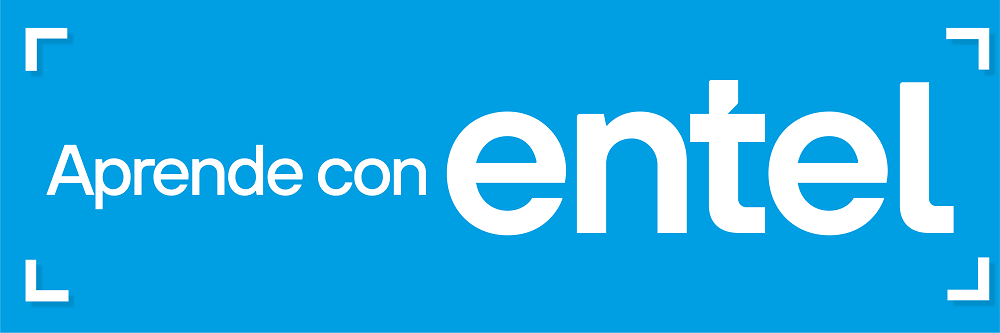

Plataforma digital para identificar, consultar y reportar problemas de calidad de internet y conectividad de los usuarios de ENTEL Bolivia.
Probar el prototipo Conocer el proyecto
ENTEL CONECTA 360° es una plataforma digital diseñada para ayudar a los usuarios a identificar, consultar y reportar problemas relacionados con la calidad de internet y la conectividad. El sistema reúne cuatro funciones principales:
Visualiza zonas con buena señal, señal débil o posibles problemas de conectividad, con datos disponibles y reportes de usuarios.
Registra problemas de señal y detecta sectores donde los usuarios tienen dificultades para conectarse.
Orienta al usuario ante internet lento, cortes de conexión o dificultades de acceso a la red.
Permite registrar problemas, indicar la zona y consultar el estado de cada reporte.
Actualmente, los usuarios de servicios de telecomunicaciones pueden experimentar diferentes dificultades:
Las cuatro funciones integradas en una sola plataforma. Los datos mostrados son de ejemplo y de prueba; los reportes que registres se guardan solo en tu navegador.
Si antes marcaste un punto en el mapa, se usará esa ubicación.
Se calcula con los reportes de señal débil y fallas.
| Código | Tipo | Zona | Estado |
|---|
Se espera que ENTEL CONECTA 360° contribuya a mejorar la experiencia de los usuarios, facilitando la identificación de problemas de conectividad, permitiendo reportar fallas y ofreciendo información sobre la calidad de la señal. Además, podría ayudar a identificar zonas donde se necesitan mejoras en la cobertura y orientar futuras decisiones para optimizar los servicios de telecomunicaciones.
Los usuarios identifican y comunican sus problemas con facilidad.
Los datos señalan sectores que requieren más cobertura.
Información de referencia para optimizar los servicios.
La principal innovación es que no se enfoca solamente en medir la velocidad de internet, sino que integra cuatro herramientas en una sola plataforma.
Siguientes etapas: mejorar el mapa de cobertura, incorporar herramientas para identificar zonas con señal débil, optimizar el asistente de solución de problemas y fortalecer el seguimiento de reportes.